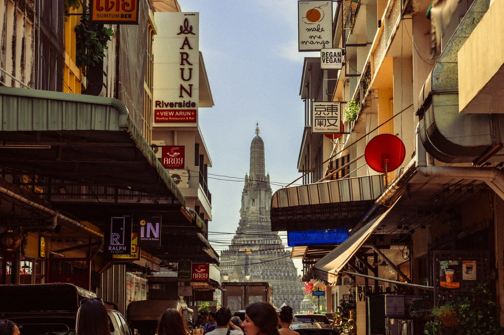
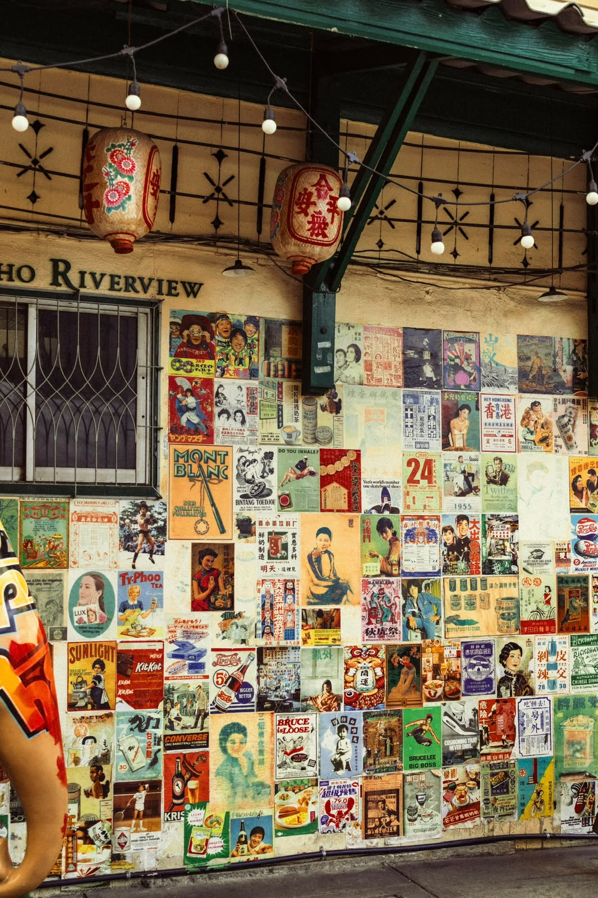
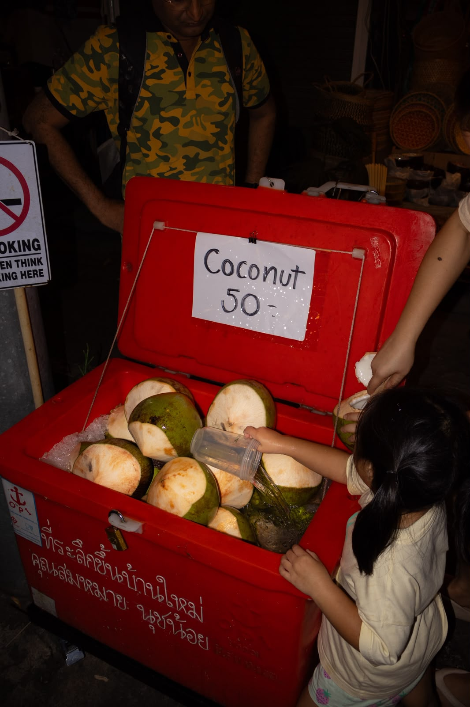

My art is not about documenting life as it is, but about shaping it through my lens.

Photography is the medium through which I reinterpret reality, transforming what I see into something unique, infinite, and deeply mine.
In a world where we constantly feel like we are running out of time, photography gave me the impression that, for once, I could catch it. With a single click, time could slow down, stretch, or even stop.

I am self-taught, learning through practice and intuition, guided by the internal belief that passions have no fixed rules.

Art is simply what we choose to make of it.
ablas frames